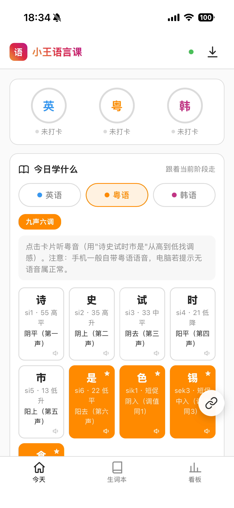
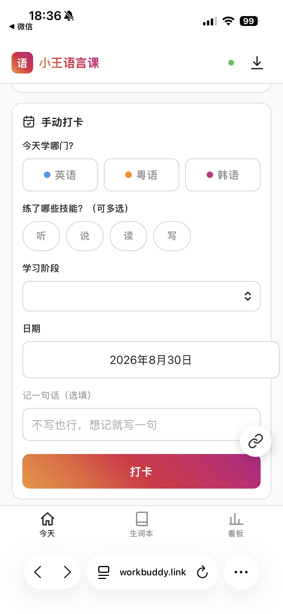
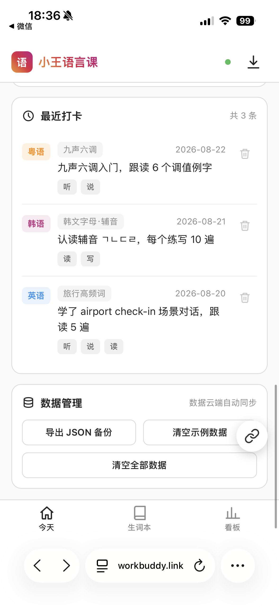

B 端反馈 → 产品改进
面向硬件产品全流程，收集 B 端客户真实使用反馈，协调产品、供应链与业务角色，推动问题识别、方案调整与落地。
Home / 01
用数据与创意
把想法变成结果
2年+数据运营、产品专员工作经验，统计学专业背景，具备较强数据拆解、用户洞察、跨角色沟通统筹能力；擅长对接多方角色、收集整理用户反馈并推动迭代落地。
I am not broken. I’m growing.
面向硬件产品全流程，收集 B 端客户真实使用反馈，协调产品、供应链与业务角色，推动问题识别、方案调整与落地。
整理用户使用、偏好和行为信息，以统计分析搭建用户运营看板，为产品选择与运营策略提供支持。
参与并推进 20+ 场校园活动，对接不同参与者与资源，负责组织、沟通和执行。
从内容生产者和用户的真实需求出发，整理反馈，识别共性问题。
用 SQL、Power BI 和统计方法拆解问题，让运营动作有依据。
对接多方角色，把模糊想法推进成清晰的行动与可验证结果。
主动使用 AI 工具搭建工作台，持续观察创作者平台和内容生态。
还没有 AIGC 工作经历，但我已经开始用 AI 工具做事。
使用 WorkBuddy 搭建语言学习工作台，把需求、信息与使用流程组织成可持续使用的工具。



点击图片放大查看 / 1 · 2 · 3使用 Codex 参与网页的结构、视觉和交互实现，把想法快速转化为可验证的页面。
持续关注 Liblib 等创作者平台，观察内容生产、作品展示与创作者成长之间的关系。
用 AI 生成新的观看方式，也用摄影记录真实世界，在一次次凝视里认识世界。


READY TO JOIN